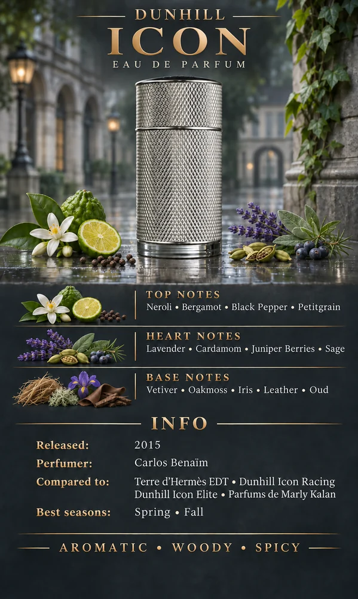
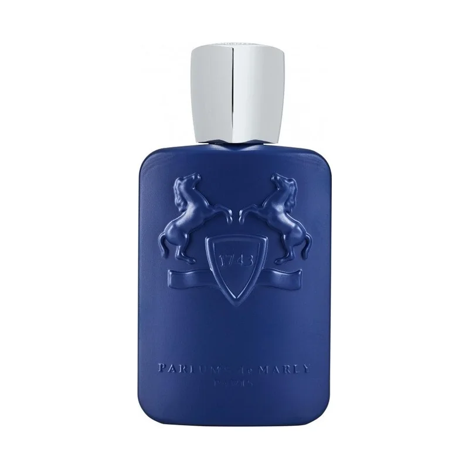
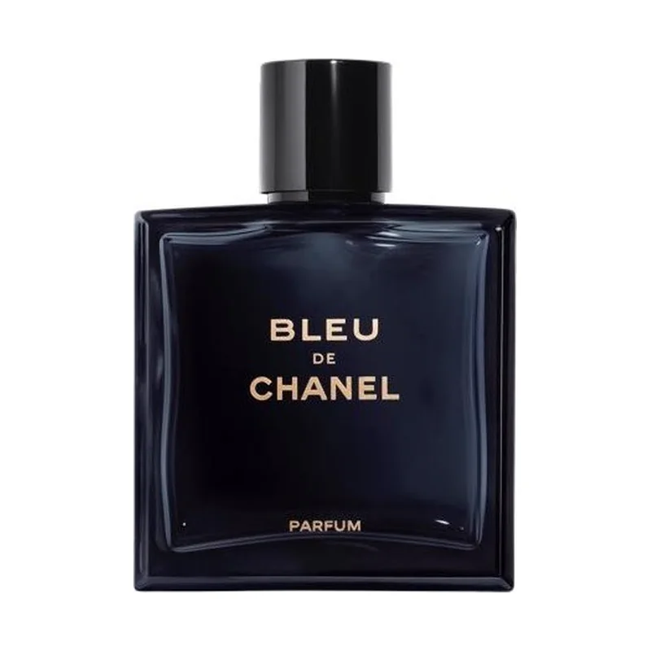

Dunhill
Icon Eau de Parfum
β Beta Designer · Eau de Parfum · 2015 In collection
Randy's rating6.75/10
Public rating8/10
Overall R18.38/25
Normalized N0.735
R = 6.75 × 1.3 + 8 × 1.2 = 18.38 of 25 · N = 18.38 ÷ 25 = 0.735 How scores work
Notes
Top notes
- neroli
- bergamot
- black pepper
- petitgrain
Heart notes
- lavender
- cardamom
- juniper berries
- sage
Base notes
- vetiver
- oakmoss
- iris
- leather
- oud
Details
| House | Dunhill |
|---|---|
| Type | Designer · β Beta |
| Concentration | Eau de Parfum |
| Released | 2015 |
| Perfumer | Carlos Benaïm |
| Scent family | Aromatic, Woody, Citrus |
| Best seasons | Spring, Fall |
| Similar to | Hermès Terre d'Hermès Eau de Toilette Dunhill Icon Racing / Icon Elite Maison Crivelli Kalan |
Sources
Fragrantica 4.17/5 (about 8.3/10) from 4,171 votes; Parfumo 7.9/10 from 1,024 ratings, ranked ~#212 in men's. Neroli-pepper leather aromatic; rounded to 8. Checked 2026-11-06.
Other Suggestions
-
 Roja ParfumsElysium Pour Homme ParfumRandy9.75Public 9N 0.940
Roja ParfumsElysium Pour Homme ParfumRandy9.75Public 9N 0.940 -

Parfums de MarlyPercivalRandy8Public 8N 0.800 -
 LattafaMaahir Legacy Eau de ParfumRandy7Public 8N 0.748
LattafaMaahir Legacy Eau de ParfumRandy7Public 8N 0.748 -
 ArmafOdyssey Aqua Edition Eau de ParfumRandy6Public 9N 0.743
ArmafOdyssey Aqua Edition Eau de ParfumRandy6Public 9N 0.743 -

ChanelBleu de Chanel ParfumRandy9.5Public 9N 0.926